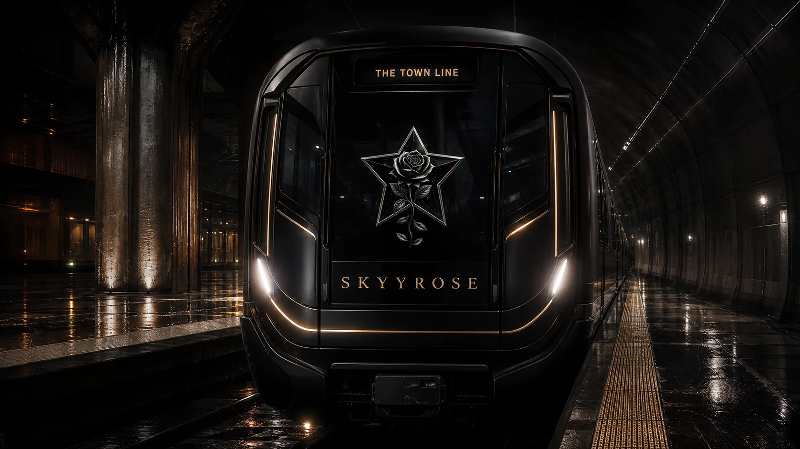

Paid production authorized. Six Higgsfield jobs completed. View the actual rendered campaign collection. The plan below is the retained approval-stage record; current production status is in the render ledger.
Oakland, California · The relaunch
The Town. A new chapter.
Seven days. Four worlds. One name.
A source-led campaign that moves from anticipation to the new storefront, then into the garments and the stories that make the house.
CREATIVE REVIEW · NO GENERATION SUBMITTED
01 / Creative contract
A house with four distinct voices.
A campaign proposal for three days before launch, launch day, and three days after. T remains the approved production date; this packet does not assume the staging site is the released store.
Source hierarchy. SOT.md → structured catalog + founder dossiers → verified hub scope + pixel inspection → typography and collection identity. A generated scene or template is never product authority.
Brand DNA, current execution. Oakland / The Town, family, gender-neutral voice, black/white with rose-gold house accent. Silver for Black Rose, crimson for Love Hurts, gold for Signature. Preserve real garment colors even if a source emblem contains blue; never recolor merchandise to satisfy a backdrop rule.
Typography conflict resolved. Current SOT Archivo / Hanken Grotesk / Anton; Cinzel caps and existing collection-script assets. The supplied Brand DNA skill’s retired fonts are not reintroduced.
Template translation. Split bridge hero; four collection-owned portal frames; source-first PDP hierarchy; fictional Town Line reveal. The template’s old year, blanket Pre-order labels, jersey details, founder portrait and service promises are not copied.
Kids exception. Existing full-color Kids source only. No generated child, no mascot identity swap, no monochrome child statue, and no “her first uniform” sales framing.
Copy provenance. The bloodline phrase is sourced to collection stories. All other campaign hooks are proposed copy, not founder quotations. Omit unverified sustainability, manufacturing, scarcity, award and material claims.
Portal compositions are HTML layout proofs using unmodified existing images. They demonstrate hierarchy; they do not certify final optical integration, rights, or ad approval.
SKYYROSE. A new chapter in The Town. The website relaunch is coming.
Format
9:16 Story + 4:5 feed still
Paid lanes
0% cold / 100% warm of this day’s cap
Audience
Returning followers and consented brand engagers
Distribution
Organic IG Story/feed first; optional Meta warm awareness after profile/landing QA.
Destination
Brand profile; verified existing homepage only if its teaser message matches.
Visual direction
Split composition: brand and headline on the left; the retained bridge/star-rose scene on the right. Frame the waterfront as a place, not a generic skyline. No new garment or logo.
Sequence
Static teaser. Story panel 1: SKYYROSE + bridge; panel 2: four collection names; panel 3: Follow the reveal. No countdown date until the date is approved.
Measure
Qualified profile visits and landing-page views; video completion only if cut V1 is used.
Experiment
Two hooks: “A new chapter in The Town.” versus “Four worlds. One name.” Keep image and delivery constant.
Before release: Bridge reference is wired locally, not ad-approved. Date and prelaunch destination remain unverified.
SOURCE REFERENCE / NOT FINAL AD
SIGNATURE / BLACK ROSE
Choose what speaks to you.
Explore your collection ↗
DAY 2 · T-2 · 5% OF B
Choose what speaks to you.
Signature. Black Rose. Two expressions of the same name. Meet the pieces before the new house opens.
IG/FB carousel. Organic Story poll may ask “Which world speaks to you?”; it is an engagement prompt, not purchase evidence.
Destination
Existing collection destinations only after live route and message verification. Otherwise organic profile carousel.
Visual direction
Two collection-owned frames: gold Signature with exact sg-009 front; silver Black Rose with exact br-004 front. Existing portraits remain whole. No wardrobe change, emblem recolor or generative fill.
Sequence
Carousel card A: Signature / sg-009. Card B: Black Rose / br-004. Each card carries its own collection name and destination. Product is visible immediately.
Measure
Collection visits per landing-page view; card-level clicks where available.
Experiment
Product-first portrait versus frame-first composition; preserve exact product, CTA and audience.
Before release: sg-009 hub approval is product-card scope only; br-004 includes historical ad-creative scope. Current campaign and rights clearance still required.
SOURCE REFERENCE / NOT FINAL AD
LOVE HURTS / FOUNDER
A name with a bloodline.
Meet Love Hurts ↗
DAY 3 · T-1 · 5% OF B
A name with a bloodline.
Hurts is the bloodline that raised me. Love Hurts carries that story into the next chapter of SkyyRose.
Format
4:5 editorial still + 9:16 three-panel Story
Paid lanes
0% cold / 100% warm of this day’s cap
Audience
Warm viewers; adult customers responding to founder-led stories
Distribution
IG/FB Stories and feed. Email teaser to consented subscribers: subject “A new chapter. The same roots.”
Destination
Verified Love Hurts collection page; if unavailable, profile Story without a link.
Visual direction
Crimson collection framing around the unchanged lh-004 front portrait. Use the supplied template’s editorial hierarchy. No fake founder portrait, voice clone or testimonial.
Sequence
Panel 1: Love Hurts garment and collection name. Panel 2: sourced bloodline line, treated as brand narrative. Panel 3: Meet Love Hurts. No “tomorrow” until launch time is signed off.
Measure
Story completion and qualified Love Hurts visits; evaluate checkout intent after launch.
Experiment
Story-led headline versus garment-led “Meet Love Hurts.” No fabricated founder attribution to newly written copy.
Before release: Front-only. Omit satin, material composition, hood lining and back claims because fiber composition is not certified and back-image pending state remains open; the stale satin-appearance prohibition is corrected.
SOURCE REFERENCE / NOT FINAL AD
RELAUNCH
The house is open.
Choose your world ↗
DAY 4 · LAUNCH · 30% OF B
The house is open.
The new SkyyRose website is live. Four worlds. One name. Enter a world. Claim your story.
Consented returning customers and engagers first; adult discovery after launch QA
Distribution
Meta warm release first. Owned launch email only after gate. Optional organic TikTok version; paid TikTok stays off until its account/tracking scope is approved.
Destination
/collections/ after production V2, child routes, mobile product links and checkout are confirmed.
Visual direction
Template split bridge hero → four collection frames → real approved website capture → house end card. Never generate a fake screenshot of the store.
Sequence
V1: 0–2s SKYYROSE/bridge; 2–5s approved bridge motion; 5–9s four exact-source collection cards, one second each; 9–10s real released-site capture; 10–12s CTA. CTA starts at 5s and remains through the end.
Measure
Collection-to-product rate, add-to-cart, checkout starts, verified purchases and checkout errors.
Experiment
Warm hero hook “The house is open.” vs “Four worlds. One name.” Hold landing and offer fixed.
Before release: If production relaunch is not approved or any critical route fails, keep this day on HOLD; use D1 wording organically, with no “live” claim.
SOURCE REFERENCE / NOT FINAL AD
KIDS CAPSULE
Luxury runs in the family.
Explore Kids Capsule ↗
DAY 5 · T+1 · 15% OF B
Luxury runs in the family.
Named after a daughter. Built by a father. Meet the Kids Capsule in the new SkyyRose house.
Format
4:5 still + 9:16 Story; optional locally edited 10-second slideshow
Paid lanes
80% cold / 20% warm of this day’s cap
Audience
Adult parent/guardian purchasers and consented warm Kids visitors; never direct paid targeting to children
Distribution
Meta adult prospecting (80%) plus warm Kids visitors (20%) in existing test structure; organic Stories. No new list upload or new tracking deployment.
Destination
/collections/kids-capsule/ → exact kids-001 product and currently published size guidance.
Visual direction
Retain the existing full-color kids-001 portrait and rose-gold collection frame. Preserve the red/black/white block, chest and thigh emblems and sleeve patch. No mascot replacement or monochrome statue child.
Sequence
0–3s existing portrait; 3–6s unchanged full-garment frame with CTA appearing; 6–8s collection label; 8–10s CTA hold. Local transitions only, no generated child movement.
Measure
Size-guide engagement where consented instrumentation exists; product visits, add-to-cart and questions about fit.
Experiment
Family headline versus “Meet the Kids Capsule.” Avoid gendered sales framing.
Before release: Product-card approval is historical. Ad-scope, child-image rights and final integration must be cleared; no matching-family-fit, durability or age-fit claims without evidence.

SOURCE REFERENCE / NOT FINAL AD
JERSEY SERIES
The Town Line.
Explore the Jersey Series ↗
DAY 6 · T+2 · 10% OF B
The Town Line.
Jersey Series. A closer look is coming. Rooted in The Town.
Format
12-second train teaser V3 + 4:5 still
Paid lanes
70% cold / 30% warm of this day’s cap
Audience
Adult local-culture and sportswear discovery; existing Jersey Series interest
Distribution
IG/FB Reel and Stories; organic TikTok train edit if approved. No preseason/sports partnership claim.
Destination
Verified Jersey Series section within /collections/black-rose/; use the collection root if no stable section anchor exists. Hide CTA if section is absent.
Visual direction
Existing Town Line train reference establishes the template’s BART reveal grammar. No jersey pixels, invented patch, league mark, BART logo or endorsement. It is a fictional brand scene, not a real service announcement.
Sequence
V3: 0–2s train nose/series name; 2–5s train motion; 5–8s editorial title “Jersey Series”; 8–10s verified collection capture showing only cleared media; 10–12s CTA. If capture is unavailable, hold approved type card through 10s.
Measure
Jersey-section visits and qualified product views; do not count this teaser as product-fidelity certification.
Experiment
Train reveal vs static train poster with identical copy; assess qualified visits, not just views.
Before release: br-009 garment images excluded: hub front is pending for a missing patch; digit-fill/technique conflict remains unresolved. If a product/price enters later, create a new SKU-bound approval and Pre-order CTA.
SOURCE REFERENCE / NOT FINAL AD
PRODUCT / CONTINUITY
Make it yours.
Shop Black Rose ↗
DAY 7 · T+3 · 30% OF B
Make it yours.
Black Rose. See the details. Find your size. Make it yours.
Format
10-second product film V2 + 4:5 structured product still
Paid lanes
0% cold / 100% warm of this day’s cap
Audience
Consented adult product viewers and cart visitors; exclude purchasers where supported and permitted
Distribution
Meta conversion retargeting only (100% warm) where consent and verified events permit. One follow-up email to engaged non-purchasers, respecting frequency/unsubscribe settings.
Destination
/collections/black-rose/ → exact br-004 product. Change to Explore if current orderability is unverified; Pre-order if server state changes.
Visual direction
Structured PDP-inspired composition: exact front image left, product name and truthful CTA right, source detail panel below. No invented price, stock count, shipping badge or interactive size selector in an ad.
Sequence
V2: 0–3s exact br-004 portrait; 3–5s source detail shown in separate frame; 5–8s same exact garment with approved atmosphere clip only behind the panel; 8–10s CTA. CTA starts at 3s. All garment pixels remain static.
Measure
Verified purchases, cost per purchase and contribution after variable costs; monitor error rate and returns signals beyond the week.
Experiment
“See the details.” vs “Find your size.” Preserve product and price state. If audience is too small, retain organic follow-up and do not force spend.
Before release: No automatic budget scale or deadline claim. Snapshot price/stock/preorder/fulfillment and test destination immediately before activation.
03 / Timed visual storyboards
Every second has a job.
Three motion sources. Three finished edits. Garments stay in exact-source panels, while only approved environments move. Each storyboard totals its stated runtime and includes its final CTA hold.
V1 · 12 SECONDS · 9:16
The house opens / warm film
0–2s SKYYROSE · The house is open.2–5s Gentle waterfront motion; logo remains an exact overlay.5–9s Four source portraits, 1 second each: sg → br → lh → kids. CTA begins.9–10s Real approved website capture replaces this reference frame.10–12s Choose your world. Exact destination overlay.
Reference panels specify timing and source selection; they are not final generated frames. Single generated G1 source clip is five seconds; local stills, cards and holds complete the edit. No extra start-frame re-render is hidden in the budget.
V2 · 10 SECONDS · 9:16
Black Rose / product-first retargeting film
0–3s Exact br-004 portrait. Black Rose.3–5s Separate unchanged reference detail. CTA appears by 3s.5–8s Static product panel; atmosphere motion behind it only.8–10s Shop Black Rose, only when current state supports Shop.
Reference panels specify timing and source selection; they are not final generated frames. Single generated G2 source clip is five seconds; local stills, cards and holds complete the edit. No extra start-frame re-render is hidden in the budget.
V3 · 12 SECONDS · 9:16
The Town Line / series teaser
0–2s The Town Line.2–5s Slow approach, no morphing marks.5–8s Jersey Series. A closer look is coming.8–10s Approved real collection capture, or a type-card hold.10–12s Explore the Jersey Series.
Reference panels specify timing and source selection; they are not final generated frames. Single generated G3 source clip is five seconds; local stills, cards and holds complete the edit. No extra start-frame re-render is hidden in the budget.
Product-detail composition / D7
Black Rose · br-004
BLACK Rose Hoodie
See the details. Find your size. Make it yours.
SHOP BLACK ROSE · STATE-GATED
Approval board only. Live price, available sizes and fulfillment are intentionally not printed until verified. The ad does not imitate functioning checkout controls.
04 / Commercial plan
Measure the visit through to the order.
Audience and channel design
Hypotheses: returning brand followers want clarity about what changed; adult discovery audiences want identity plus actual product detail; parent/guardian purchasers want exact appearance and size confidence. Run Meta as the primary proposed paid channel so an unknown budget is not fragmented across platforms. Adapt approved videos organically for TikTok. Audience availability, account permissions and pixel/CAPI state have not been inspected.
Prelaunch: warm awareness only after teaser destinations are verified. Postlaunch: D4 60% cold/40% warm, D5 80/20, D6 70/30, D7 0/100 within each day’s cap; exclude recent purchasers where supported and consented. Keep existing campaign/ad-set structures stable where appropriate; do not create seven isolated learning pools just because seven creatives exist. No new customer-list upload is authorized.
Budget and decision rules
B is the approved seven-day paid-media budget. Daily shares: 5 / 5 / 5 / 30 / 15 / 10 / 30% (100%). Budget is a cap, not an obligation. Conditional lane split across the full week totals 37% cold and 63% warm with the current day weights; D7 and V2 are retargeting-only. TikTok paid budget defaults to zero. Channel split and dollar caps remain a founder decision. Creative-production credits are separate.
Review once daily at a chosen account-local time. Pause immediately on broken destination, incorrect order state, tracking duplication, product mismatch or misleading promise. Compare hooks within the same audience/placement using qualified visits and product actions, not raw CTR alone. After sufficient conversion evidence, shift at most 20% of a daily allocation once per day; if the week is underpowered, keep findings directional and do not claim a winning creative. Do not promise ROAS.
Measurement specification
Record spend, impressions, outbound clicks, landing views, collection-to-product clicks, view_item, add_to_cart, begin_checkout and deduplicated purchase. Event names and custom world-click instrumentation are proposed, not claimed installed. Use consent-respecting existing analytics; no PII in URLs or event parameters. Purchase value/currency and order IDs must reconcile with authorized WooCommerce reporting.
utm_source=instagram&utm_medium=paid_social&utm_campaign=skyyrose_relaunch_7d&utm_content=d04_v1_warm_a. Use facebook, tiktok or newsletter as source; organic_social/email as appropriate. Retain SKU and creative ID in the reporting table. Pre-order value and fulfilled-order outcomes must be distinguished.
Primary business measures: verified purchase rate, cost per purchase, contribution after product/fulfillment/payment costs. Diagnostic measures: landing-to-product rate, product-to-cart rate, checkout completion and error rate. Establish baselines before flight; targets remain unset until budget, margins and historic performance are supplied.
Launch gate and delay behavior
T is the approved production relaunch, not staging availability. Require approved theme promotion; fresh live collection/product routes; mobile add-to-cart and checkout verification; current price, stock, preorder and fulfillment wording; working consent/tracking; final creative approval and explicit media spend caps. Do not touch existing customer/order data. If launch slips, hold D4–D7, remove scheduled live/date claims, and keep only truthful organic teaser copy. There is no automatic publication in this package.
Owned-channel copy
D3 teaser email: subject “A new chapter. The same roots.” Preview “The SkyyRose website relaunch is coming.” Body: “Four worlds. One name. Rooted in The Town. Follow the reveal.” D4 launch email: subject “The new SkyyRose house is open.” Preview “Choose your world. Meet the pieces.” Body uses the four approved collection cards; CTA “Choose your world.” Send only after the live gate. D7 follow-up: subject “Find your world. See the details.” Preview “Take a closer look at Black Rose.” Product-state-safe CTA only; respect consent, purchaser exclusions and frequency settings.
05 / Higgsfield production plan
Three new plates. Exact-source garments.
Higgsfield was checked read-only on 2026-09-11: one private owner workspace, Plus, 1,074 credits; no workspace explicitly selected. Intended target must be confirmed before upload/spend. Model and estimate receipts are saved in evidence/. No job was submitted.
Output
Exact config
Count
Credits
I1–I3 environment masters
gpt_image_2 · 2k · high · 9:16 · count 1
3
19.50
G1–G3 motion sources
kling3_0 · pro · 5s · sound off · 9:16 · count 1
3
26.25
Optional composition previews
gpt_image_2 · 1k · low · 9:16
3
1.50
Base plan / with optional previews
No paid retries; no audio, upscale or reframe calls included
6 / 9 calls
45.75 / 47.25
Use credits_exact, not rounded display credits. These are current configuration estimates without bound uploaded references; re-estimate the exact approved payload immediately before each call. Estimates do not authorize charges. First pilot is one br-004 composition: I2 only, one attempt, then independent review. Do not submit the remaining images or clips until its applicable gate passes.
Founder approves the seven concepts, exact ad-scope source selections, copy, template exceptions and three timed storyboards. Pending Jersey garment and LH back references stay excluded.
Verify current source hashes against source-manifest.json and bind intended Higgsfield workspace. Prepare approved source uploads only; no repository, customer or unrelated data is sent.
For each image call: show exact prompt, source hashes, roles, model/config, fresh cost, one-attempt ceiling and quarantine output path. Receive that call’s approval; upload/reference approved bytes; submit once. No autonomous retry.
Inspect full output: architecture, branding, color, source integrity and caption area. Failed candidate stays quarantined. An image review does not approve its motion call.
For each approved I1–I3 master, submit the corresponding G1–G3 start-image motion once after its own cost/approval manifest. Kling roles are start_image/end_image; this plan uses start_image only, so no unbudgeted end plate.
Assemble 23 final still exports across seven daily concepts and three timed films locally with unchanged source product panels and exact brand/type overlays. No AI enlargement, generative fill, garment warp or automatic creative enhancement. 4:5 variants are designed layouts with contain-fit source images, not blind crops; 16:9 email header uses original landscape source. No extra paid model call is assumed.
Independent full-resolution source comparison and complete video/frame review, then founder approval of actual exports. Final scheduling/publication requires approved live URLs, budgets and separate activation authority.
Motion instruction, all clips: “Single continuous shot. Slow camera push no more than 3%; subtle fog/reflection movement. No cuts, new objects, deformed bridge/vehicle geometry, flickering text, moving garment or face. Preserve the approved start composition. If exact marks cannot hold, remove generated marks and use the unchanged approved overlay in local post.” Final mark/logo integration is reviewed, not assumed.
I1 · Bridge atmosphere · exact draft prompt
Environment-only vertical composition for SkyyRose. Use the approved bridge reference for waterfront perspective, wet black stone, moonlit silver and restrained rose-gold atmosphere. Preserve recognizable bridge geometry. Reserve the upper central region for exact brand overlays in post. No person, garment, invented star-rose, new logotype, letters, signs, neon, blue color grade or branding. The canonical monument and wordmark are separate unchanged source layers only after approval. A calm, photographic Oakland night; restrained fog and physically coherent reflections.
Environment-only vertical black-stone and industrial waterfront court. Monochrome silver edge light, deep black, wet concrete, restrained fog, correct perspective. Use the approved Black Rose scene as environmental reference only. Keep central product-panel region visually quiet. No garments, people, mannequin, embroidery, logos, signage, words or new monument. No blue grade. Product will appear in a separate unchanged photographic panel; do not synthesize it.
Vertical cinematic fictional Town Line station atmosphere informed by the approved SkyyRose train reference. Keep source train silhouette and camera direction; reserve vehicle badge and destination areas for exact source overlays in post. Black metal, warm metallic accents, wet platform, controlled highlights. No garment, jersey, sports mark, transit agency logo, endorsement, invented writing or service timetable. No blue grade, no morphing geometry. Any failed exact train fidelity is quarantined; use approved existing still in local edit instead.
Seven concepts yield 23 still files and three films; an optional D5 local slideshow is the 27th export. No square adaptations are included unless separately booked. D1: four stills; D2: four stills; D3: four stills; D4: five stills plus V1; D5: four stills; D6: one still plus V3; D7: one still plus V2. All Story panels, carousel cards, source dependencies and approval states are listed in deliverable-manifest.json. Local layouts do not add provider calls.
Export and creative QC
Editorial target: 1080×1920 video, H.264 MP4, 30fps, muted-first with exact text overlays; source resolution must support it without claiming upscaling restores detail. Feed stills: 1080×1350; optional square:1080×1080; email:1600×900 assembled from originals. Use local layout changes rather than cutting garment details. Review text and products against each placement’s actual safe-zone overlay, not universal pixel guesses. TikTok’s current guide recommends 9:16 with at least 540×960 and says safe zones vary with caption and add-ons. Official June 2026 TikTok specification. Meta official page redirected to login; current account placement-preview verification remains pending.
Fail on wrong SKU, new/deleted embroidery, color shifts, face changes, type corruption, cropped cuffs/hems/emblems, incorrect product state or missed CTA timing. Static garment panels must remain visually unchanged throughout motion. Brand recognition without campaign labels is a proposed adult-viewer test, not a claimed result. Any music/voice is a separate rights/source/budget decision; the silent cuts remain complete.
06 / Evidence and decisions
Ready to review. Not released.
Local evidence: retained template inspected; four selected product front sources and their packshots inspected; current hub scopes read; local hashes recorded. Hub destination copies are absent in this checkout, so previews use the exact source paths recorded in the hub and SOT, clearly as reference-only. Their current bytes still require ad-scope acceptance.
Open source issues: br-009 front/back pending, missing patch and unresolved technique/color; digit placement is corrected from later founder notes. lh-004 stale “NOT satin” assertion is corrected to founder-intended satin appearance; fiber composition and pending back remain unverified; sg-009/lh-004/kids-001 historical approvals limited to product-card scope; scene/frame availability and V2 wiring are not founder promotion. No disputed SKU imagery enters a paid-generation payload.
Skill adoption: template, Brand DNA and Fashion Theme Team read. Current skill examples cover only part of this task; no library-wide compliance claim. Task-specific correct/incorrect examples and limits. Template imagegen workflow is deferred because the user explicitly requires visual/storyboard approval before generation and requests Higgsfield for execution.
jersey · wordpress-theme/skyyrose-flagship/data/dossiers/black-is-beautiful-jersey-series-2-last-oakland-football.md 041d33df7e629fd45bb9df9ce0657543d3f01cd20cfb9c3b913fdb9799f20bf3
Approval requested: campaign direction D1–D7; front-only exact-source product panels; no br-009 garment; template translation using current SOT typography; timed V1/V2/V3 storyboards. Production estimates are reviewable, but no generation is submitted until the relevant per-call manifest is approved. Launch date, time zone, media budget and ad-source scope remain explicit decisions.


 SOURCE REFERENCE / NOT FINAL AD
SOURCE REFERENCE / NOT FINAL AD